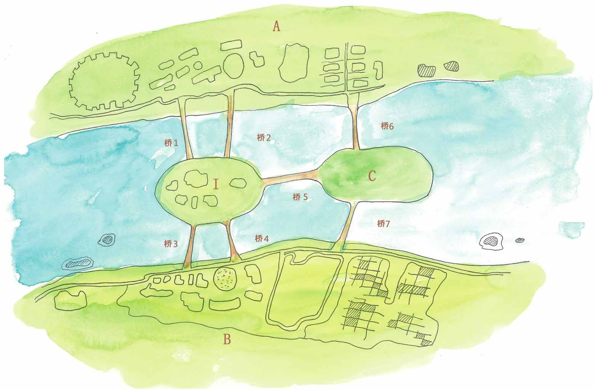
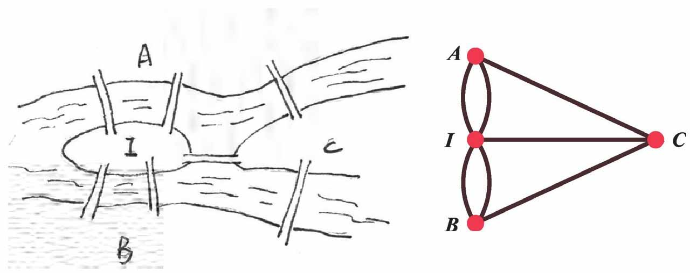
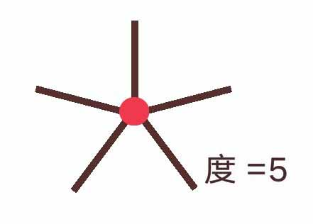
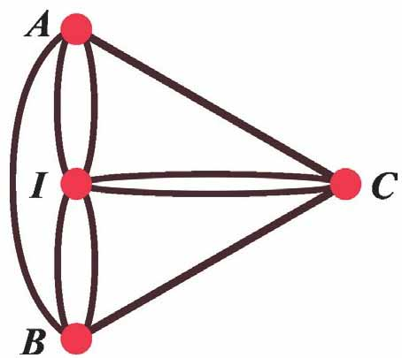
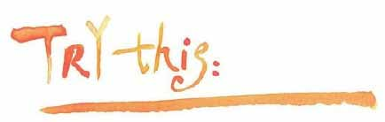
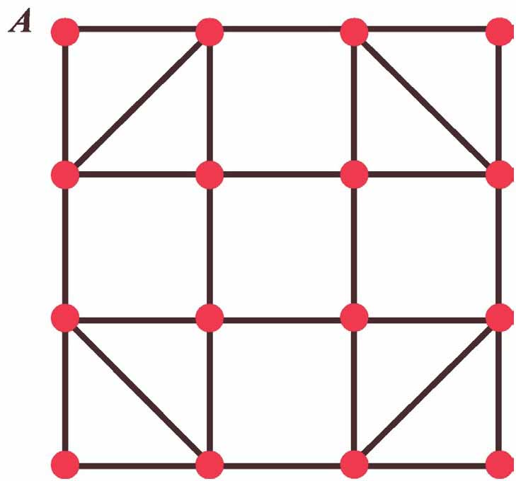

小文，我们开始“图论”部分的课程了，我们先从哥尼斯堡七桥问题开始。在17世纪的时候，东普鲁士有一座城市叫哥尼斯堡，普雷格尔河穿城而过，河上有七座桥。

七座桥将A、B、I、C城区连接起来
哥尼斯堡也是大名鼎鼎的哲学家康德的故乡。据说这位大哲学家极少远行，但康德喜欢散步可是出了名的。每天下午三点半，工作了一天的康德先生便会准时踱出家门，踏上他那著名的“哲学家小道”。
哥尼斯堡的居民也喜欢散步，他们喜欢沿着城中的七座桥散步。
大家倒不会像康德那样思考艰深的哲学问题，他们讨论的问题要生活化一些，比如这个：能否从城中任意位置出发，走遍七座桥后回到出发点，要求每座桥只能走一次。
居民们绕着这七座桥来来回回走了很久，也没有人知道该怎么走。
也不知怎么的，这个问题传到了欧拉那里，他对这个问题也很感兴趣。他也许是在孩子们的喧闹声中求解这个问题的吧。考虑这个问题的时候，他是这样做的，用4个点表示哥尼斯堡的4个城区，用7条线表示7座桥，如此这般，欧拉将七桥问题抽象为一个图模型。

欧拉将哥尼斯堡七桥问题抽象成右图的形状
欧拉将城区缩略成点，将桥缩略成边，这种方法只关心点和边的连接关系，而忽略点和边的具体形状，这成为图论研究问题的基本方法并沿用至今。
他是这样说明的：和某一点相连的边的数目称为该点的“度”（degree）。

欧拉发现，如果一个图的所有顶点的度数是偶数，则从任意一个顶点出发，不用走重复的边就能很容易地行遍所有的边一次，然后回到出发点。对于这些度数是偶数的顶点，它们连接的边不必重复就能恰好可以“一次用完”。
但如果图中存在有顶点的度数是奇数，要走出类似的回路就存在要么有边无法“用完”，要么边“不够用”的情况。
哥尼斯堡七桥问题其实是想寻找类似这样的一条回路：从一个点出发，一次且仅一次走遍图中所有的边，然后回到起点，这样的路径后来被称为“欧拉回路”，存在“欧拉回路”的图称为“欧拉图”。图中每个点的度数是否是偶数是判断欧拉回路是否存在的充分必要条件。
1736年的一天，欧拉向俄罗斯科学院呈递了他的一篇论文。论文包括了哥尼斯堡七桥散步问题的求解过程。欧拉认为，在哥尼斯堡七桥问题中，每个顶点度数都是奇数，度数列分别是3、3、3、5，因此，结论是：哥尼斯堡七桥问题无解。
想必哥尼斯堡的居民们会非常失望，不过解决的办法还是有的。因为存在“欧拉回路”的前提是每个点的度数是偶数，所以，如果再修建两座桥，让每个点的度数都为偶数（度数列为4、4、4、6），哥尼斯堡居民的散步问题就有解了（而实际上，这七座桥中的两座在第二次世界大战中被炸毁，另两座后来被高速公路取代，这是后话）！
也许欧拉和哥尼斯堡的居民们都没想到，由散步而来的这篇论文成了一个新的数学分支——现代图论——的开篇之作。

再修建两座桥，哥尼斯堡居民的散步问题就有解了

存在欧拉回路是一回事，找出欧拉回路是另一回事。
小文，下面的图中每个点的度数都是偶数，显然这是欧拉图，你试试看能否从A点出发在图中找出一条欧拉回路来？
